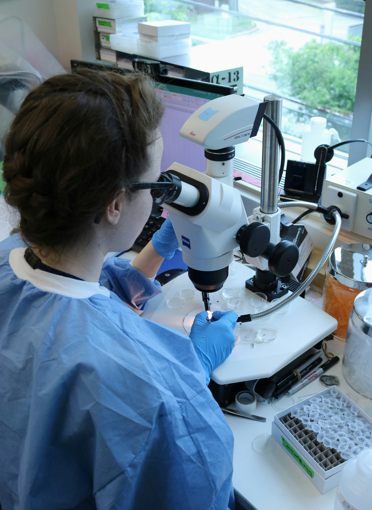
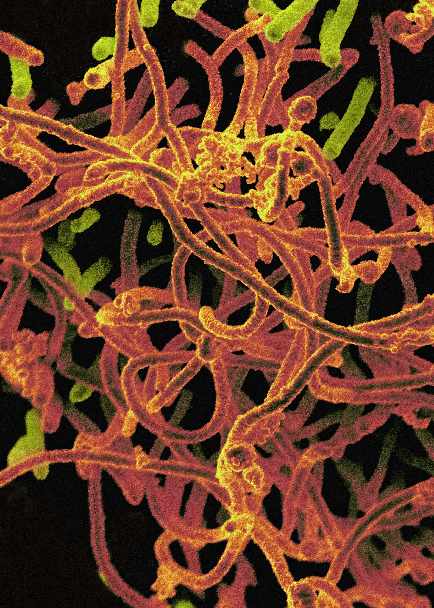

Biosecurity
What does Biosecurity entail?

In broad terms Biosecurity refers to actions taken to mitigate or combat risks posed by organisms-usually in the form of disease-and to minimise the impact on the public or wildlife. Biosecurity is mentioned in a variety of legal frameworks, such as the International Health Regulation
, European Union Animal Health Strategy and the UN Food and agriculture organisations handbooks. In each Biosecurity is talked about in a different context, from human health to animal health to plant health, each comes with a set of unique challenges, although there do exist problems
universal to all 3.
Examples of preventative actions that are related to Biosecurity include; researching/developing vaccines, preventing the introduction of invasive species to areas of biological concern, implementing policies designed to regulate labs that work with dangerous pathogens.
In short, Biosecurity is all about protecting us and the environment around us from risks associated to biological materials.
How is Biosecurity related to EA?

Only recently the world was reminded just how much of an impact a pandemic can have on virtually every aspect of life and the wider environment. As technology progresses at an unprecedented rate, access to the tools required to manufacture unnatural biological weapons (regardless if done intentionally or accidentally)
is only becoming easier to obtain, and so the risk of seeing a manufactured pathogen recreate the havoc COVID-19 wreaked on society increases at a similar rate. This is not the only concern however, even without considering the possibility of a manufactured pandemic, the risk of a naturally occuring pathogen causing an
epidemic on a similar scale to 2020 is ever steady, due in part to funding cuts, political instability and a lack of defined policy.
Relative to the risk and potential danger to life posed by these events, the worldwide spending is lacklustre at best and wildly insufficient at worst, reflecting the lack of attention this subject gets. This is one of the reasons those interested in EA are often drawn to this area, where there is substantial room for growth
in investment and policy ambition. The links below provide a more full story to the risks posed and how those involved with EA are working to tackle the problem. Additionally, we hold regular (introductory) talks on Biosecurity related material, so check out our events page to find the next one!
AI Safety
What is AI Safety?
 AI has taken the world by storm, starting as a pipe dream before evolving into a tool that is used almost universally for almost anything and everything and has a plethora of clear benefits. However, fears about the potential misuses of AI remain at the forefront of the minds of regulatory bodies, goverments, and citizens of nations worldwide as tech companies continue to march forward developing these models with ruthless pace.
As the name would suggest, AI safety is all about how we can prevent these models from being used by bad actors to enable or scale malicous actions, which is of course easier said than done when the threat in question is evolving at rapid pace with little thought given towards regulation.
AI has taken the world by storm, starting as a pipe dream before evolving into a tool that is used almost universally for almost anything and everything and has a plethora of clear benefits. However, fears about the potential misuses of AI remain at the forefront of the minds of regulatory bodies, goverments, and citizens of nations worldwide as tech companies continue to march forward developing these models with ruthless pace.
As the name would suggest, AI safety is all about how we can prevent these models from being used by bad actors to enable or scale malicous actions, which is of course easier said than done when the threat in question is evolving at rapid pace with little thought given towards regulation.
Another aspect of these models that poses significant risk is the potential for the models to become misaligned. A scenario where a misaligned model causes significant harm is becoming increasingly likely as AI systems are given access to more and more sensitive/personal data daily.
How is AI Safety related to EA?
 AI models can be deployed in a variety of ways to help tackle a number of issues that the wider EA community are interested in solving, such as climate change, education access and health care access. Ensuring that AI can be used to tackle these issues while simultaneously making sure it doesn't
become misaligned or fall into the wrong hands in the process is where AI safety research comes into play. The discovery/invention of an artifical general intelligence model could also pose an existential threat to the human race, so there remains debate as to whether we should move towards this at all.
AI models can be deployed in a variety of ways to help tackle a number of issues that the wider EA community are interested in solving, such as climate change, education access and health care access. Ensuring that AI can be used to tackle these issues while simultaneously making sure it doesn't
become misaligned or fall into the wrong hands in the process is where AI safety research comes into play. The discovery/invention of an artifical general intelligence model could also pose an existential threat to the human race, so there remains debate as to whether we should move towards this at all.
If any of the issues talked about above interest you, or you want to find out more about the other issues related to AI safety and how you can help out, come to one of our talks or AI safety reading group sessions!